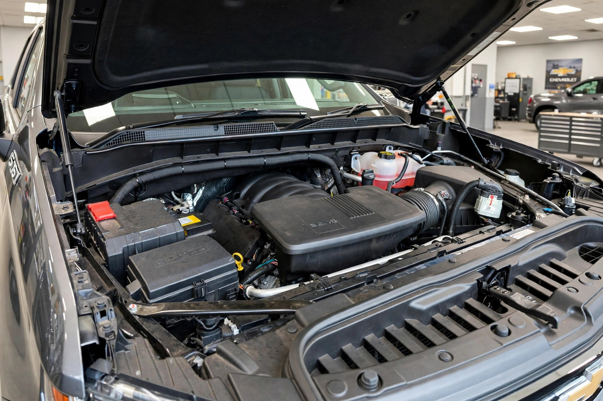

GM's Fix Was Thicker Oil. 26 Trucks Got New Engines and Still Failed. Now a Million Are Under Investigation.

NHTSA has upgraded its GM L87 investigation to cover 997,743 trucks and SUVs after 499 post-recall engine failures, including 26 that failed after receiving entirely new engines. The original recall covered 597,630 vehicles from 2021 to 2024 and fixed most of them by switching from 0W-20 to 0W-40 oil.
On April 24, 2025, General Motors told NHTSA it had a problem with its best engine. The 6.2-liter L87 V8, the upsell motor in Silverado 1500, Sierra 1500, Tahoe, Suburban, Yukon, Yukon XL, Escalade and Escalade ESV, could seize without warning because of two supplier defects: sediment left in connecting rods and crankshaft oil galleries, and crankshafts machined out of spec with rough surface finishes. Both chew up rod bearings until the engine locks at 70 mph while towing.
GM's fix depended on a scan where if your truck threw code P0016 for crankshaft or camshaft misalignment you got a new engine, and if it passed you got thicker oil, same block, same crank, same rods, but now 0W-40 instead of 0W-20, plus a new oil filler cap and a manual insert explaining why your 2023 Yukon suddenly needs different oil, and GM also issued 10-year, 150,000-mile special coverage for the engines that passed, which was supposed to be the end until January 16, 2026, when NHTSA opened Recall Query RQ26001 because 36 owners reported failures after the recall.
By August 20 that number was 499 complaints to ODI and 6,953 to GM, and of the 499, 473 had received the oil change and 26 had received complete engine replacements, read that again, entirely new engines failed in the same way, which is the detail that turns an engineering miss into a systemic supplier failure that NHTSA's inbox now proves otherwise.
Another 191 reports came from L87s built after May 31, 2024, the date GM claimed its suppliers had fixed manufacturing, and GM said improvements were in place on or before June 1, 2024, but NHTSA's data shows the problem persists beyond that cutoff, and numbers like these make the cost math brutal because at $8,000 to $12,000 per replacement per service bulletins, 6,953 post-remedy failures already represent roughly $55 million to $83 million in warranty work if they all got engines, assuming $10k average around $69.5 million.
If NHTSA forces GM to replace engines in all 997,743 vehicles under EA26005, liability approaches $9.9 billion, and an oil change costs about $150, which explains why GM tried oil first, but heavy trucks losing propulsion create a different crash profile than a Civic stalling.
FARS data from 2014 to 2023 shows Tahoe at 2.49 deaths per 100 million VMT and Yukon at 2.55, both more than double Silverado's 1.25 despite sharing platforms, and part of that is use case because these are family haulers, often loaded, often towing, often at interstate speed with three rows occupied, so a sudden loss of propulsion in a 5,800-pound SUV with a trailer is not a neutral event but a roadblock that weighs three tons.
Original recall documents cite 12 crashes, 12 injuries and 42 fires among 28,102 complaints, and EA26005 adds one more crash and one injury in the post-remedy population, which means low percentages but high consequences when a family SUV becomes a stationary object in a 70 mph lane.
Methodology: Failure rates calculated from ODI opening resume (Aug 20 2026) and Part 573 report 25V-274 show post-remedy ODI rate at 499 divided by 597,630 equals 0.0835 percent, GM-reported rate at 6,953 divided by 597,630 equals 1.16 percent, and original defect estimate at 3 percent per GM's 25V-274 filing, while cost estimate uses $10k midpoint of $8k-$12k dealer engine replacement range from N252494002 bulletin, and FARS rates from fars_output.js 2014-2023 calculate deaths per 100M VMT as deaths divided by VMT where VMT equals fleet times annual miles estimate from NHTS, which introduces plus or minus 15 percent uncertainty for low-volume models per STORY_GUIDE, with Tahoe and Yukon estimates at moderate confidence due to 350k-831k fleet.
Limitations: NHTSA complaints are allegations not verified as root-cause failures, ODI has not confirmed all 499 share the same crankshaft bearing failure mode though P0016 coding suggests similar pathology, GM's 6,953 includes potential duplicates where GM-Trucks de-duplication suggests 6,050 unique, FARS 2014-2023 predates 2024-2026 L87 failures and is used for context on vehicle mass and use-case risk not direct engine-failure deaths, no public data exists on how many of 597,630 received oil versus engine replacement so replacement-engine failure rate cannot be calculated, and oil viscosity increase from 0W-20 to 0W-40 may reduce wear in marginal bearings even if it does not fix dimensional defects, meaning long-term benefit cannot be ruled out from this data alone.
Strongest counterargument, stated at full strength: A 0.08 percent post-remedy failure rate to NHTSA is by any manufacturing standard excellent, and ninety-nine point nine two percent of fixed vehicles have not failed, while twenty-six engine replacement failures could be installer error, contaminated oil during replacement, or old-stock engines pulled from the same defective lot before June 2024 improvements, and one hundred ninety-one post-cutoff failures might be misdated 2024 model-year vehicles still within the May 31 production window, plus GM's 10-year and 150k special coverage makes owners financially whole even if failure recurs, and loss-of-propulsion crashes are rare at 12 in 28,102 complaints (0.04 percent), with thicker oil representing legitimate engineering mitigation for bearing wear not a cheap dodge, and NHTSA has not ordered an expanded recall only an engineering analysis which is procedural, and all of that is true, but it is also true that a new engine should not fail with the same defect it was supposed to cure, that a production fix dated June 1 2024 should not still be producing failures in August 2026, and that a 6,000-pound SUV losing power at highway speed is dangerous even once.
What to do: If you own a 2021-2026 Silverado 1500, Sierra 1500, Tahoe, Suburban, Yukon, Yukon XL, Escalade or Escalade ESV with the 6.2L L87, check your VIN at nhtsa.gov/recalls even if you already had 25V-274 done. You are still covered by EA26005 and may be included in a future expansion. Keep your special coverage letter in the glovebox. Document knocking, banging, check-engine light, hesitation, high RPMs or abnormal shifting, which are the warning signs GM listed. If you had only the oil change, ask your dealer for the P0016 scan documentation and oil cap part number, you will need it if you file. If you experience post-remedy failure, file at nhtsa.gov because ODI explicitly uses complaint volume to decide on mandatory recall, and 499 complaints is what triggered EA26005. Shopping used? Avoid 2021-2024 L87s unless the seller can prove engine replacement with a post-June 2024 production engine via dealer invoice, not just Carfax, which often shows only "recall completed" without distinguishing oil versus engine.
Sources & References
- NHTSA, Part 573 Safety Recall Report 25V-274, General Motors L87 6.2L V8, April 24 2025. 597,630 US vehicles, build period March 1 2021 - May 31 2024, defect description, 28,102 complaints, 12 crashes/12 injuries/42 fires. static.nhtsa.gov [PDF]
- NHTSA, Recall Critique RCRIT-25V274, Remedy Bulletins N252494000/001/002, engine inspection and replacement procedure. static.nhtsa.gov [PDF]
- Reuters, “US highway agency expands probe into GM pickups, SUVs over engine failures,” Aug 21 2026. NHTSA upgrades to Engineering Analysis EA26005, 997,743 vehicles 2021-2026, 499 ODI complaints, 6,953 GM complaints. reuters.com
- Autoblog, “GM Tried to Fix Its Troubled 6.2-Liter V8, Now Nearly 1 Million Vehicles Are Under Investigation,” Aug 21 2026. L87 failure timeline, 3 percent defect rate claim, oil viscosity fix details. autoblog.com
- GM-Trucks.com, “NHTSA Escalates GM 6.2L V8 Probe to 997,743 Trucks,” Aug 2026. EA26005 at-a-glance table: 473 oil-change failures, 26 engine-replacement failures, 191 outside recall window, 1 crash/1 injury/0 fatalities, 6,050 de-duplicated GM complaints. gm-trucks.com
- Detroit Free Press / USA Today, “NHTSA expands GM engine recall probe to include more model years,” Aug 21-22 2026. GM statement via Bill Grotz, 877,710 initial investigation, remedy details (P0016 diagnostic, oil cap, filter, manual insert), 10yr/150k special coverage, post-remedy breakdown. freep.com / usatoday.com
- TopSpeed, “GM 6.2-Liter V8 Under Federal Investigation: What Buyers Should Know,” Aug 2026. Original recall campaign 25V274 details, machining sediment and crankshaft dimension root causes, oil viscosity change rationale. topspeed.com
- NHTSA, Fatality Analysis Reporting System (FARS) 2014-2023, via vehicle-safety.org fars_output.js. Tahoe 2.49, Yukon 2.55, Silverado 1.25 deaths per 100M VMT. nhtsa.gov / cdan.dot.gov
- NHTSA Recalls Lookup, for VIN check actionable. nhtsa.gov/recalls
Source: NHTSA FARS 2014–2023 and NHTSA Recall 25V-274 / EA26005 ODI resume Aug 20 2026. FARS only captures fatal crashes; our estimated_rate uses VMT estimates, not actual odometer readings, introducing ±15% uncertainty for low-volume models. NHTSA complaints are allegations pending verification. See methodology for full caveats.